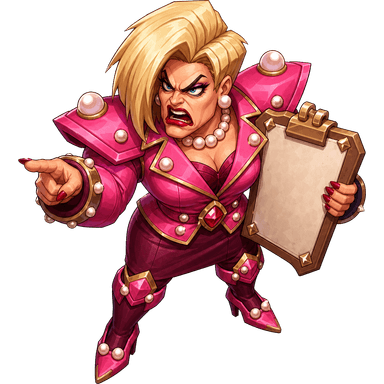

01 / BUNKER▥

The complaint bunker is open. The records are not.
OP 017 ENCOUNTERS · 12–18 MIN
BLACKSITE FLUSH
Breach Karen's complaint bunker and flush the evidence before extraction.
Final antagonist: Regional Manager Karen
- 01Kick the Stall
- 02Courtesy Hold
- 03Plunger Detail
- 04Complaint Hunt
- 05Void Validation
- 06Courtesy Flush
- 07Regional Manager Karen
Choose your route
Service Tunnel
10 percent less reinforcement pressure; base Operation score.
Later echo: The prior tunnel route powers clean pressure for the opening siege. Eligible after completion.
Select this route →Executive Washroom
standard reinforcement pressure; 10 percent Operation score premium.
Select this route →